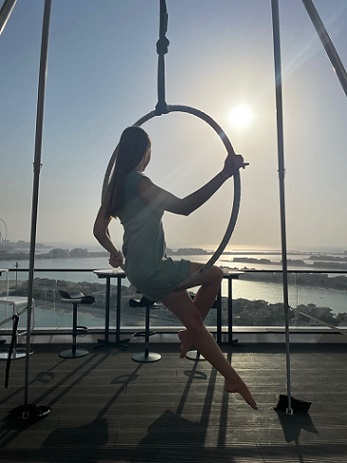
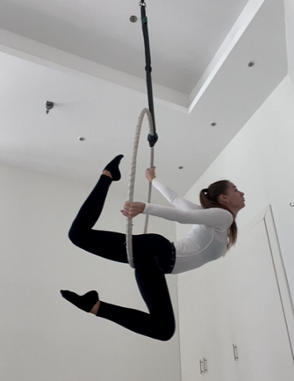

The aerial hoop (also known as the lyra, aerial ring or cerceau/cerceaux) is a circular steel apparatus
(resembling a hula hoop) suspended from the ceiling, on which circus artists may perform aerial acrobatics. It
can be used static, spinning, or swinging.

In aerial hoop, you conduct the exercises in fast motions and you often practice rather long combinations.